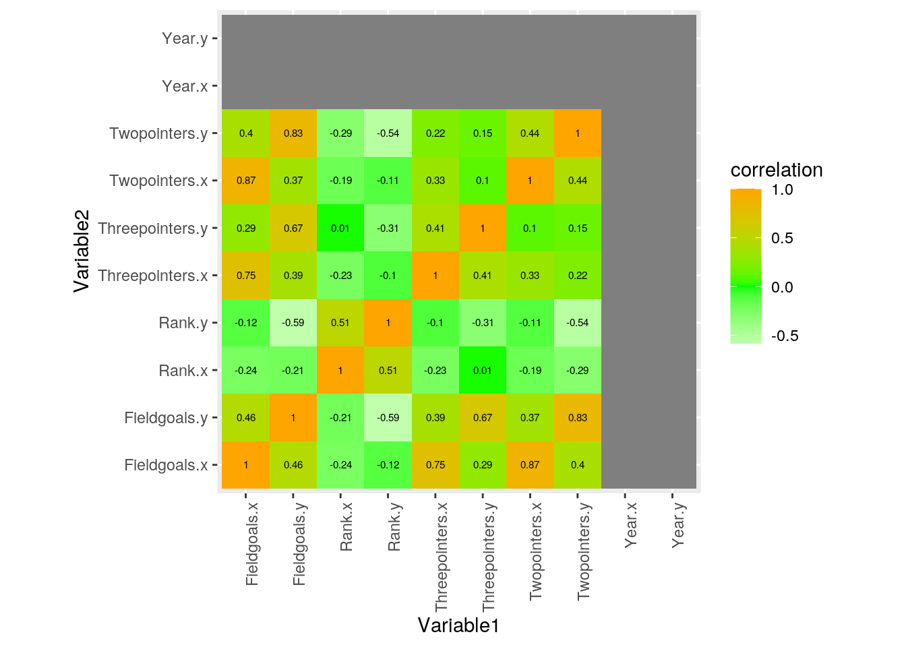
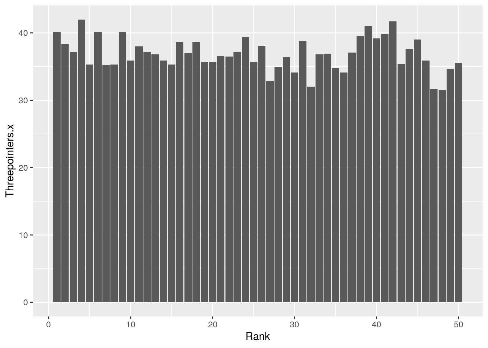
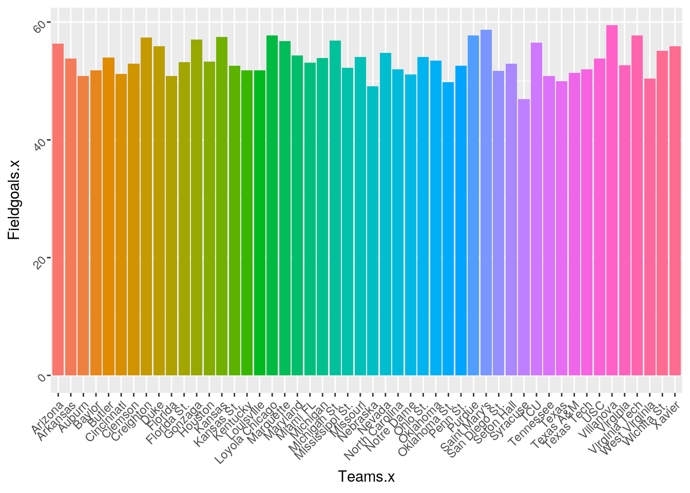
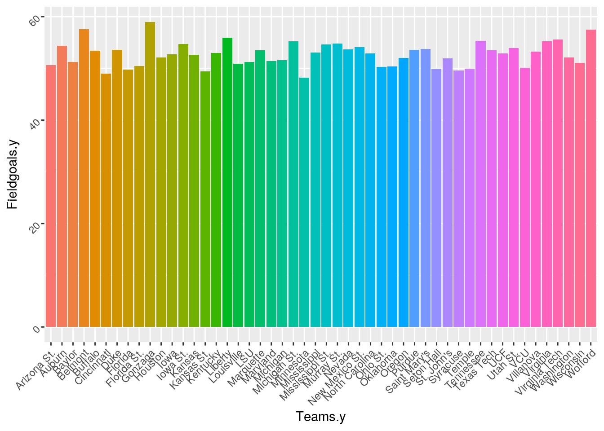
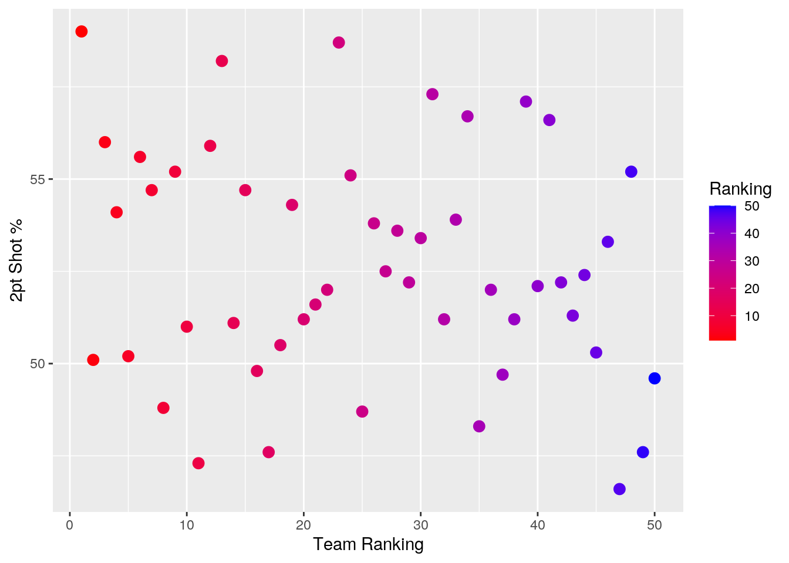
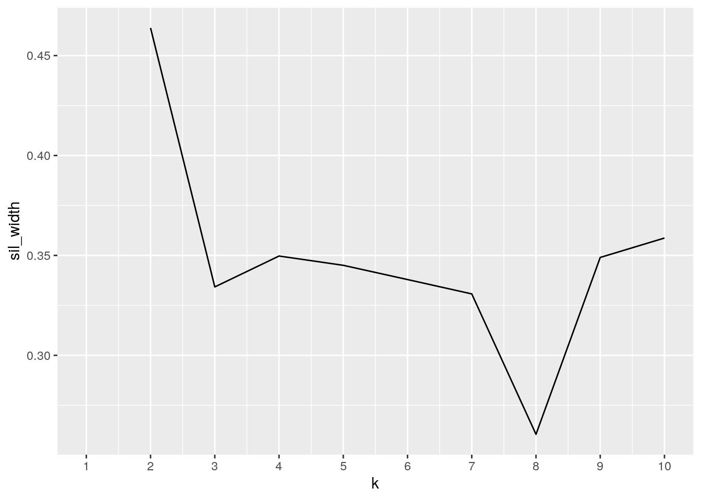
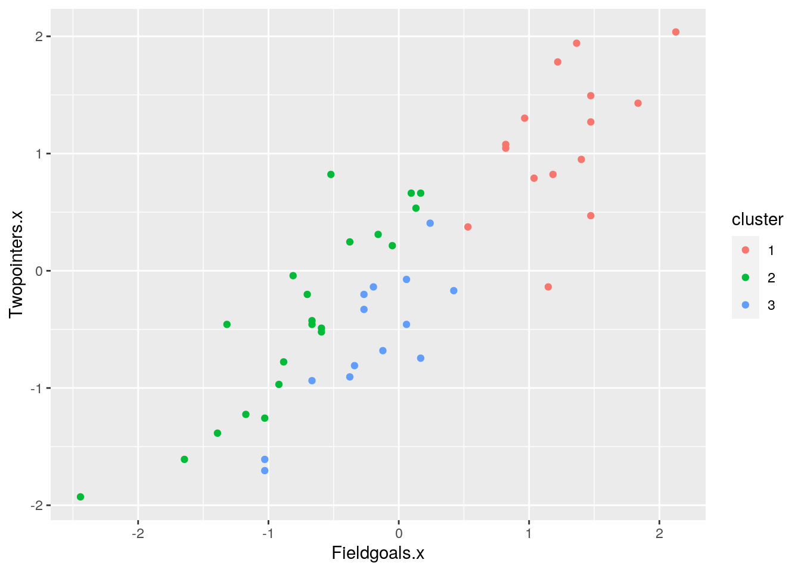
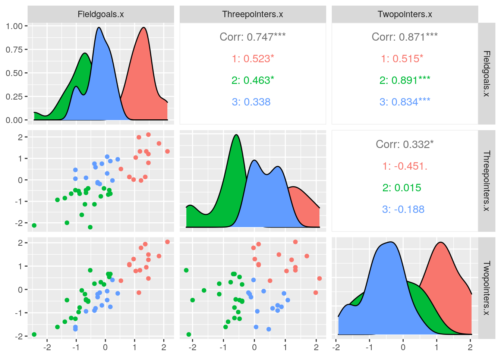

Packages used:
library(tidyverse)
library(fivethirtyeight)
library(dplyr)
library(pastecs)
library(Hmisc)#Q0: Introduction and Data Sets
data2019 <- read.csv("Data2019.csv", header = TRUE, quote = "\"",
stringsAsFactors = TRUE, strip.white = TRUE)
data2018 <- read.csv("Data2018.csv", header = TRUE, quote = "\"",
stringsAsFactors = TRUE, strip.white = TRUE)For the purpose of this project, I used two data sets obtained from Kaggle(link below) which included statistics about Men’s NCAA Basketball tournament. I have always been a huge fan of college basketball and thought it would be great practice analyzing team statistics while using the skills that I have learned in R. The data sets used include the top 50 teams (Teams) from the 2018 and 2019 season. The variables analyzed include the team ranking for the respective year (Rank), conference the basketball team plays in (Conf), field goal shots percentage (Fieldgoals), two-point shots percentage (Twopointers), and three-point shots percentage (Threepointers). Overall, I hope to analyze these two data sets in order to make predictions based off of statistical analyses.
https://www.kaggle.com/andrewsundberg/college-basketball-dataset?select=cbb19.csv
#Q2: Joining/Merging
joinedbyrank <- data2018 %>% left_join(data2019, by = "Rank")
joinedbyteam <- data2018 %>% left_join(data2019, by = "Teams" %>%
na.omit(DT))I chose to perform a left_join() in order to combine the data sets with data from 2018 and 2019 using a common “ID” of ranking and Teams. Since left_join() keeps all the rows from the first data set and adds the rows that match from the second data set, it allowed me to keep all variables. Although it created a wider data set, I was able to have the 2018 and 2019 data side-by-side in order to perform statistical analyses. It is important to note that no cases were dropped.
#Q3: Wrangling
# Q3(a):Using all six core dplyr functions
# Using Filter
joinedbyrank %>% filter(Rank == "1")## Year.x Rank Teams.x Conf.x Fieldgoals.x Threepointers.x Twopointers.x
## 1 2018 1 Villanova BE 59.5 40.1 59
## Year.y Teams.y Conf.y Fieldgoals.y Threepointers.y Twopointers.y
## 1 2019 Gonzaga WCC 59 36.3 61.4joinedbyrank %>% filter(Rank == "50")## Year.x Rank Teams.x Conf.x Fieldgoals.x Threepointers.x Twopointers.x
## 1 2018 50 Notre Dame ACC 51.1 35.6 49.6
## Year.y Teams.y Conf.y Fieldgoals.y Threepointers.y Twopointers.y
## 1 2019 Liberty BSth 55.9 36.8 56.4joinedbyteam %>% filter(Teams == "Gonzaga")## Year.x Rank.x Teams Conf.x Fieldgoals.x Threepointers.x Twopointers.x
## 1 2018 13 Gonzaga WCC 57 36.8 58.2
## Year.y Rank.y Conf.y Fieldgoals.y Threepointers.y Twopointers.y
## 1 2019 1 WCC 59 36.3 61.4joinedbyrank %>% filter(Rank >= 10 | Conf.x == "ACC" & Conf.y ==
"ACC")## Year.x Rank Teams.x Conf.x Fieldgoals.x Threepointers.x Twopointers.x
## 1 2018 2 Virginia ACC 52.7 38.3 50.1
## 2 2018 3 Duke ACC 55.9 37.2 56.0
## 3 2018 10 North Carolina ACC 52.0 35.9 51.0
## 4 2018 11 Tennessee SEC 50.8 38.0 47.3
## 5 2018 12 Xavier BE 55.9 37.2 55.9
## 6 2018 13 Gonzaga WCC 57.0 36.8 58.2
## 7 2018 14 Texas Tech B12 52.0 35.9 51.1
## Year.y Teams.y Conf.y Fieldgoals.y Threepointers.y Twopointers.y
## 1 2019 Virginia ACC 55.2 39.5 52.5
## 2 2019 Duke ACC 53.6 30.8 58.0
## 3 2019 Purdue B10 53.6 37.4 51.5
## 4 2019 Houston Amer 52.1 35.5 51.3
## 5 2019 LSU SEC 51.2 31.9 52.9
## 6 2019 Virginia Tech ACC 55.6 39.4 52.9
## 7 2019 Kansas St. B12 49.4 33.4 48.9
## [ reached 'max' / getOption("max.print") -- omitted 36 rows ]joinedbyrank %>% filter(str_detect(Conf.x, "ACC")) #2018## Year.x Rank Teams.x Conf.x Fieldgoals.x Threepointers.x Twopointers.x
## 1 2018 2 Virginia ACC 52.7 38.3 50.1
## 2 2018 3 Duke ACC 55.9 37.2 56.0
## 3 2018 10 North Carolina ACC 52.0 35.9 51.0
## 4 2018 21 Clemson ACC 52.9 36.6 51.6
## 5 2018 28 Florida St. ACC 53.2 35.0 53.6
## 6 2018 29 Miami FL ACC 53.1 36.4 52.2
## 7 2018 31 Virginia Tech ACC 57.7 38.8 57.3
## Year.y Teams.y Conf.y Fieldgoals.y Threepointers.y Twopointers.y
## 1 2019 Virginia ACC 55.2 39.5 52.5
## 2 2019 Duke ACC 53.6 30.8 58.0
## 3 2019 Purdue B10 53.6 37.4 51.5
## 4 2019 Iowa St. B12 54.7 36.2 55.0
## 5 2019 Nevada MWC 53.7 34.7 54.9
## 6 2019 VCU A10 50.1 30.5 53.1
## 7 2019 Mississippi SEC 53.1 35.8 52.7
## [ reached 'max' / getOption("max.print") -- omitted 3 rows ]joinedbyrank %>% filter(str_detect(Conf.x, "ACC")) #2019## Year.x Rank Teams.x Conf.x Fieldgoals.x Threepointers.x Twopointers.x
## 1 2018 2 Virginia ACC 52.7 38.3 50.1
## 2 2018 3 Duke ACC 55.9 37.2 56.0
## 3 2018 10 North Carolina ACC 52.0 35.9 51.0
## 4 2018 21 Clemson ACC 52.9 36.6 51.6
## 5 2018 28 Florida St. ACC 53.2 35.0 53.6
## 6 2018 29 Miami FL ACC 53.1 36.4 52.2
## 7 2018 31 Virginia Tech ACC 57.7 38.8 57.3
## Year.y Teams.y Conf.y Fieldgoals.y Threepointers.y Twopointers.y
## 1 2019 Virginia ACC 55.2 39.5 52.5
## 2 2019 Duke ACC 53.6 30.8 58.0
## 3 2019 Purdue B10 53.6 37.4 51.5
## 4 2019 Iowa St. B12 54.7 36.2 55.0
## 5 2019 Nevada MWC 53.7 34.7 54.9
## 6 2019 VCU A10 50.1 30.5 53.1
## 7 2019 Mississippi SEC 53.1 35.8 52.7
## [ reached 'max' / getOption("max.print") -- omitted 3 rows ]# Using Arrange
joinedbyrank %>% arrange(desc(Threepointers.x)) #Best 3-pt shooting team 2018## Year.x Rank Teams.x Conf.x Fieldgoals.x Threepointers.x Twopointers.x
## 1 2018 4 Purdue B10 57.7 42.0 54.1
## 2 2018 42 Marquette BE 56.8 41.7 52.2
## 3 2018 39 Saint Mary's WCC 58.7 41.0 57.1
## 4 2018 1 Villanova BE 59.5 40.1 59.0
## 5 2018 6 Kansas B12 57.5 40.1 55.6
## 6 2018 9 Michigan St. B10 56.9 40.1 55.2
## 7 2018 41 Loyola Chicago MVC 57.7 39.8 56.6
## Year.y Teams.y Conf.y Fieldgoals.y Threepointers.y Twopointers.y
## 1 2019 North Carolina ACC 52.9 36.2 52.1
## 2 2019 Ohio St. B10 50.3 34.1 49.7
## 3 2019 Minnesota B10 48.2 31.7 48.5
## 4 2019 Gonzaga WCC 59.0 36.3 61.4
## 5 2019 Michigan St. B10 55.2 37.8 54.3
## 6 2019 Texas Tech B12 53.5 36.5 52.8
## 7 2019 Saint Mary's WCC 53.8 37.8 52.3
## [ reached 'max' / getOption("max.print") -- omitted 43 rows ]joinedbyrank %>% arrange(desc(Threepointers.y)) #Best 3-pt shooting team 2019## Year.x Rank Teams.x Conf.x Fieldgoals.x Threepointers.x Twopointers.x
## 1 2018 26 Wichita St. Amer 55.1 38.1 53.8
## 2 2018 2 Virginia ACC 52.7 38.3 50.1
## 3 2018 13 Gonzaga WCC 57.0 36.8 58.2
## 4 2018 20 Kentucky SEC 51.8 35.7 51.2
## 5 2018 17 Florida SEC 50.8 37.0 47.6
## 6 2018 6 Kansas B12 57.5 40.1 55.6
## 7 2018 41 Loyola Chicago MVC 57.7 39.8 56.6
## Year.y Teams.y Conf.y Fieldgoals.y Threepointers.y Twopointers.y
## 1 2019 Wofford SC 57.5 41.4 53.9
## 2 2019 Virginia ACC 55.2 39.5 52.5
## 3 2019 Virginia Tech ACC 55.6 39.4 52.9
## 4 2019 Marquette BE 53.5 38.8 50.0
## 5 2019 Auburn SEC 54.4 38.1 51.7
## 6 2019 Michigan St. B10 55.2 37.8 54.3
## 7 2019 Saint Mary's WCC 53.8 37.8 52.3
## [ reached 'max' / getOption("max.print") -- omitted 43 rows ]# Using Select
joinedbyteam %>% select(Teams, Year.x, Year.y, Fieldgoals.x,
Fieldgoals.y) #Teams and respective FG (pct) in both years## Teams Year.x Year.y Fieldgoals.x Fieldgoals.y
## 1 Villanova 2018 2019 59.5 53.2
## 2 Virginia 2018 2019 52.7 55.2
## 3 Duke 2018 2019 55.9 53.6
## 4 Purdue 2018 2019 57.7 53.6
## 5 Cincinnati 2018 2019 51.2 49.0
## 6 Kansas 2018 2019 57.5 52.6
## 7 Michigan 2018 2019 53.9 51.6
## 8 West Virginia 2018 NA 50.4 NA
## 9 Michigan St. 2018 2019 56.9 55.2
## 10 North Carolina 2018 2019 52.0 52.9
## 11 Tennessee 2018 2019 50.8 55.3
## 12 Xavier 2018 NA 55.9 NA
## 13 Gonzaga 2018 2019 57.0 59.0
## 14 Texas Tech 2018 2019 52.0 53.5
## 15 Ohio St. 2018 2019 54.1 50.3
## 16 Penn St. 2018 NA 52.6 NA
## 17 Florida 2018 2019 50.8 49.8
## 18 Houston 2018 2019 53.3 52.1
## 19 Butler 2018 NA 54.0 NA
## 20 Kentucky 2018 2019 51.8 53.0
## [ reached 'max' / getOption("max.print") -- omitted 30 rows ]joinedbyteam %>% select(Teams, Year.x, Year.y, Twopointers.x,
Twopointers.y)## Teams Year.x Year.y Twopointers.x Twopointers.y
## 1 Villanova 2018 2019 59.0 53.7
## 2 Virginia 2018 2019 50.1 52.5
## 3 Duke 2018 2019 56.0 58.0
## 4 Purdue 2018 2019 54.1 51.5
## 5 Cincinnati 2018 2019 50.2 47.6
## 6 Kansas 2018 2019 55.6 52.6
## 7 Michigan 2018 2019 54.7 51.8
## 8 West Virginia 2018 NA 48.8 NA
## 9 Michigan St. 2018 2019 55.2 54.3
## 10 North Carolina 2018 2019 51.0 52.1
## 11 Tennessee 2018 2019 47.3 55.4
## 12 Xavier 2018 NA 55.9 NA
## 13 Gonzaga 2018 2019 58.2 61.4
## 14 Texas Tech 2018 2019 51.1 52.8
## 15 Ohio St. 2018 2019 54.7 49.7
## 16 Penn St. 2018 NA 49.8 NA
## 17 Florida 2018 2019 47.6 49.5
## 18 Houston 2018 2019 50.5 51.3
## 19 Butler 2018 NA 54.3 NA
## 20 Kentucky 2018 2019 51.2 52.9
## [ reached 'max' / getOption("max.print") -- omitted 30 rows ]joinedbyteam %>% select(Teams, Year.x, Year.y, Threepointers.y,
Threepointers.y)## Teams Year.x Year.y Threepointers.y
## 1 Villanova 2018 2019 35.2
## 2 Virginia 2018 2019 39.5
## 3 Duke 2018 2019 30.8
## 4 Purdue 2018 2019 37.4
## 5 Cincinnati 2018 2019 34.5
## 6 Kansas 2018 2019 35.0
## 7 Michigan 2018 2019 34.2
## 8 West Virginia 2018 NA NA
## 9 Michigan St. 2018 2019 37.8
## 10 North Carolina 2018 2019 36.2
## 11 Tennessee 2018 2019 36.7
## 12 Xavier 2018 NA NA
## 13 Gonzaga 2018 2019 36.3
## 14 Texas Tech 2018 2019 36.5
## 15 Ohio St. 2018 2019 34.1
## 16 Penn St. 2018 NA NA
## 17 Florida 2018 2019 33.4
## 18 Houston 2018 2019 35.5
## 19 Butler 2018 NA NA
## 20 Kentucky 2018 2019 35.4
## 21 Clemson 2018 NA NA
## 22 Seton Hall 2018 2019 32.4
## 23 Creighton 2018 NA NA
## 24 TCU 2018 NA NA
## 25 Auburn 2018 2019 38.1
## [ reached 'max' / getOption("max.print") -- omitted 25 rows ]# Using mutate
joinedbyrank %>% mutate(Rank_cat = case_when(Rank <= 10 ~ "Top 10",
Rank >= 40 ~ "Bottom 10"))## Year.x Rank Teams.x Conf.x Fieldgoals.x Threepointers.x Twopointers.x
## 1 2018 1 Villanova BE 59.5 40.1 59.0
## 2 2018 2 Virginia ACC 52.7 38.3 50.1
## 3 2018 3 Duke ACC 55.9 37.2 56.0
## 4 2018 4 Purdue B10 57.7 42.0 54.1
## 5 2018 5 Cincinnati Amer 51.2 35.3 50.2
## 6 2018 6 Kansas B12 57.5 40.1 55.6
## 7 2018 7 Michigan B10 53.9 35.2 54.7
## Year.y Teams.y Conf.y Fieldgoals.y Threepointers.y Twopointers.y
## 1 2019 Gonzaga WCC 59.0 36.3 61.4
## 2 2019 Virginia ACC 55.2 39.5 52.5
## 3 2019 Duke ACC 53.6 30.8 58.0
## 4 2019 North Carolina ACC 52.9 36.2 52.1
## 5 2019 Michigan B10 51.6 34.2 51.8
## 6 2019 Michigan St. B10 55.2 37.8 54.3
## 7 2019 Kentucky SEC 53.0 35.4 52.9
## Rank_cat
## 1 Top 10
## 2 Top 10
## 3 Top 10
## 4 Top 10
## 5 Top 10
## 6 Top 10
## 7 Top 10
## [ reached 'max' / getOption("max.print") -- omitted 43 rows ]# Using summarize and group by
by_FG <- group_by(joinedbyrank, Fieldgoals.x)
summarise(by_FG, Shooting = mean(Fieldgoals.y, na.rm = T))## # A tibble: 38 x 2
## Fieldgoals.x Shooting
## <dbl> <dbl>
## 1 46.9 52
## 2 49.1 54.8
## 3 49.8 51.2
## 4 50 53.9
## 5 50.4 55.3
## 6 50.8 52.5
## 7 51.1 55.9
## 8 51.2 51.6
## 9 51.4 49
## 10 51.7 52.1
## # … with 28 more rows# Q3(b):Creating Summary statistics
joinedbyrank %>% summarise_all(n_distinct)## Year.x Rank Teams.x Conf.x Fieldgoals.x Threepointers.x Twopointers.x Year.y
## 1 1 50 50 10 38 37 43 1
## Teams.y Conf.y Fieldgoals.y Threepointers.y Twopointers.y
## 1 50 15 43 41 44joinedbyrank %>% summarise_all(mean)## Year.x Rank Teams.x Conf.x Fieldgoals.x Threepointers.x Twopointers.x Year.y
## 1 2018 25.5 NA NA 53.636 36.868 52.63 2019
## Teams.y Conf.y Fieldgoals.y Threepointers.y Twopointers.y
## 1 NA NA 52.73 35.32 52.54joinedbyrank %>% summarise_if(is.numeric, sd, na.rm = T)## Year.x Rank Fieldgoals.x Threepointers.x Twopointers.x Year.y
## 1 0 14.57738 2.757828 2.435741 3.126532 0
## Fieldgoals.y Threepointers.y Twopointers.y
## 1 2.346274 2.217279 2.775329joinedbyrank %>% summarise_if(is.numeric, var, na.rm = T)## Year.x Rank Fieldgoals.x Threepointers.x Twopointers.x Year.y Fieldgoals.y
## 1 0 212.5 7.605616 5.932833 9.775204 0 5.505
## Threepointers.y Twopointers.y
## 1 4.916327 7.702449joinedbyrank %>% summarise_if(is.numeric, quantile, na.rm = T)## Year.x Rank Fieldgoals.x Threepointers.x Twopointers.x Year.y Fieldgoals.y
## 1 2018 1.00 46.90 31.500 46.60 2019 48.20
## 2 2018 13.25 51.80 35.325 50.35 2019 50.95
## 3 2018 25.50 53.25 36.800 52.20 2019 52.90
## 4 2018 37.75 55.90 38.700 55.00 2019 54.05
## 5 2018 50.00 59.50 42.000 59.00 2019 59.00
## Threepointers.y Twopointers.y
## 1 30.500 47.600
## 2 34.025 50.725
## 3 35.150 52.050
## 4 36.500 53.850
## 5 41.400 61.400joinedbyrank %>% summarise_if(is.numeric, min, na.rm = T)## Year.x Rank Fieldgoals.x Threepointers.x Twopointers.x Year.y Fieldgoals.y
## 1 2018 1 46.9 31.5 46.6 2019 48.2
## Threepointers.y Twopointers.y
## 1 30.5 47.6joinedbyrank %>% summarise_if(is.numeric, max, na.rm = T)## Year.x Rank Fieldgoals.x Threepointers.x Twopointers.x Year.y Fieldgoals.y
## 1 2018 50 59.5 42 59 2019 59
## Threepointers.y Twopointers.y
## 1 41.4 61.4joinedbyrank %>% summarise(cor(Fieldgoals.x, Fieldgoals.y, use = "pair"))## cor(Fieldgoals.x, Fieldgoals.y, use = "pair")
## 1 0.08605932joinedbyteam %>% summarise(cor(Rank.x, Rank.y, use = "pair"))## cor(Rank.x, Rank.y, use = "pair")
## 1 0.5083278For the wrangling section, I started by using all six core dplyr functions in order to obtain specific ouputs depending on the function used. I found the filter() function to be particularly useful to determine which teams belonged to a certain conference or when looking at the statistics from a particular team. The select() function allowed me to just look at numerical statistics, such as fieldgoals, two pointers and three pointers percentages. In order to compute the summary statistics, I used the summarise_if() function to determine mean, standard deviation, variation, quantile, min and max statistics. I found summarise_if(quantile) to be a helpful tool in order to determine the spread of statistics across a data set.Lastly, I was able to determine the correlation between fieldgoal percentage from 2018 vs 2019 using the last sumarise(cor) functions.
#Q4: Visualizations
# Correlation heatmap of numeric variables
statstotal <- select(joinedbyteam, Rank.x, Year.x, Fieldgoals.x,
Twopointers.x, Threepointers.x, Rank.y, Year.y, Fieldgoals.y,
Twopointers.y, Threepointers.y)
statstotal %>% select_if(is.numeric) %>% cor(use = "pair")## Rank.x Year.x Fieldgoals.x Twopointers.x Threepointers.x
## Rank.x 1.000000000 NA -0.2385408 -0.1876408 -0.2323217
## Year.x NA NA NA NA NA
## Fieldgoals.x -0.238540811 NA 1.0000000 0.8714235 0.7470069
## Twopointers.x -0.187640846 NA 0.8714235 1.0000000 0.3317597
## Threepointers.x -0.232321666 NA 0.7470069 0.3317597 1.0000000
## Rank.y 0.508327754 NA -0.1174822 -0.1117285 -0.0981742
## Year.y NA NA NA NA NA
## Fieldgoals.y -0.211964329 NA 0.4582586 0.3718150 0.3917456
## Twopointers.y -0.290197892 NA 0.4028398 0.4361082 0.2202435
## Threepointers.y 0.008173247 NA 0.2941342 0.1045116 0.4086587
## Rank.y Year.y Fieldgoals.y Twopointers.y Threepointers.y
## Rank.x 0.5083278 NA -0.2119643 -0.2901979 0.008173247
## Year.x NA NA NA NA NA
## Fieldgoals.x -0.1174822 NA 0.4582586 0.4028398 0.294134245
## Twopointers.x -0.1117285 NA 0.3718150 0.4361082 0.104511634
## Threepointers.x -0.0981742 NA 0.3917456 0.2202435 0.408658702
## Rank.y 1.0000000 NA -0.5854181 -0.5378294 -0.309974659
## Year.y NA NA NA NA NA
## Fieldgoals.y -0.5854181 NA 1.0000000 0.8301716 0.670200911
## Twopointers.y -0.5378294 NA 0.8301716 1.0000000 0.148385717
## Threepointers.y -0.3099747 NA 0.6702009 0.1483857 1.000000000cormat <- statstotal %>% select_if(is.numeric) %>% cor(use = "pair")
tidycor <- cormat %>% as.data.frame %>% rownames_to_column("Variable1") %>%
pivot_longer(-1, names_to = "Variable2", values_to = "correlation")
tidycor %>% ggplot(aes(Variable1, Variable2, fill = correlation)) +
geom_tile() + scale_fill_gradient2(low = "white", mid = "green",
high = "orange") + geom_text(aes(label = round(correlation,
2)), color = "black", size = 2) + theme(axis.text.x = element_text(angle = 90,
hjust = 1)) + coord_fixed()
# The correlation heatmap displayed above allows for the
# reader to visualize correlation patterns depending on each
# variable from 2018 and 2019 season. A diagonal 'line' made
# up of squares with a correlation = 1 splits the heatmap in
# half since the same variables are being compared from each
# year. However, as you move towards the bottom right and top
# left corners, the correlation between two variables from
# different or same years is compared.
# Two more effective plots with ggplot
# Sidebyside Chart w Mean
joinedbyrank## Year.x Rank Teams.x Conf.x Fieldgoals.x Threepointers.x Twopointers.x
## 1 2018 1 Villanova BE 59.5 40.1 59.0
## 2 2018 2 Virginia ACC 52.7 38.3 50.1
## 3 2018 3 Duke ACC 55.9 37.2 56.0
## 4 2018 4 Purdue B10 57.7 42.0 54.1
## 5 2018 5 Cincinnati Amer 51.2 35.3 50.2
## 6 2018 6 Kansas B12 57.5 40.1 55.6
## 7 2018 7 Michigan B10 53.9 35.2 54.7
## Year.y Teams.y Conf.y Fieldgoals.y Threepointers.y Twopointers.y
## 1 2019 Gonzaga WCC 59.0 36.3 61.4
## 2 2019 Virginia ACC 55.2 39.5 52.5
## 3 2019 Duke ACC 53.6 30.8 58.0
## 4 2019 North Carolina ACC 52.9 36.2 52.1
## 5 2019 Michigan B10 51.6 34.2 51.8
## 6 2019 Michigan St. B10 55.2 37.8 54.3
## 7 2019 Kentucky SEC 53.0 35.4 52.9
## [ reached 'max' / getOption("max.print") -- omitted 43 rows ]ggplot(joinedbyrank, aes(x = Rank, y = Threepointers.x)) + geom_bar(stat = "summary",
position = "dodge") + geom_errorbar(stat = "summary", position = "dodge")
# The plot above displays all 50 teams from the 2018 season,
# ordered from the #1 ranked team to the #50 ranked team
# reading the x-axis from left to right. Additionally, three
# point shot percentage on the y-axis was included to compare
# it to team ranking for that specific year. The most
# significant finding from this plot is that top 10 ranked
# teams did not show a significantly greater three point shot
# percentage compared to the rest of the teams. In fact, the
# plot shows that teams ranked around #40 had a greater three
# point shot percentage compared to some top 10 ranked teams.
ggplot(joinedbyrank, aes(Teams.x)) + geom_bar(aes(y = Fieldgoals.x,
fill = Teams.x), stat = "summary", fun = mean) + theme(axis.text = element_text(angle = 45,
hjust = 1), legend.position = "none")
# The plot above displays the field goal percentage for each
# team during the 2018 season. Compared to the previous plot,
# this plot displays the individual name of each team on the
# x-axis, and is comparing overall fieldgoals on the y-axis,
# instead of just three-point shots. This plot makes it
# easier for the reader to distinguish each unique
# university's FG % for the 2018 season.
ggplot(joinedbyrank, aes(Teams.y)) + geom_bar(aes(y = Fieldgoals.y,
fill = Teams.y), stat = "summary", fun = mean) + theme(axis.text = element_text(angle = 45,
hjust = 1), legend.position = "none")
# The plot above displays the exact same information as the
# previous plot, however, teams from the 2019 season are
# displayed instead.
# Scatterplot displaying correlation between team ranking and
# 3pt %
ggplot(data = joinedbyrank, aes(x = Rank, y = Twopointers.x)) +
geom_point(size = 3, aes(color = Rank)) + xlab("Team Ranking") +
ylab("2pt Shot %") + labs(color = "Ranking") + scale_color_gradient(low = "red",
high = "blue")
# The scatterplot displayed above shows the correlation
# between two-point shot percentage and team ranking for the
# 2018 season. I specifically chose these variables to be
# represented in order to determine how increasing shot
# percentage differs between top ranked and lower ranked
# team. It is essential to point out that no weak or strong
# correlation was displayed and no transformations were
# applied to the data.#Q5: Dimensionality
library(cluster)
select(joinedbyrank, Fieldgoals.x, Threepointers.x, Twopointers.x)## Fieldgoals.x Threepointers.x Twopointers.x
## 1 59.5 40.1 59.0
## 2 52.7 38.3 50.1
## 3 55.9 37.2 56.0
## 4 57.7 42.0 54.1
## 5 51.2 35.3 50.2
## 6 57.5 40.1 55.6
## 7 53.9 35.2 54.7
## 8 50.4 35.3 48.8
## 9 56.9 40.1 55.2
## 10 52.0 35.9 51.0
## 11 50.8 38.0 47.3
## 12 55.9 37.2 55.9
## 13 57.0 36.8 58.2
## 14 52.0 35.9 51.1
## 15 54.1 35.3 54.7
## 16 52.6 38.7 49.8
## 17 50.8 37.0 47.6
## 18 53.3 38.7 50.5
## 19 54.0 35.7 54.3
## 20 51.8 35.7 51.2
## 21 52.9 36.6 51.6
## 22 52.9 36.5 52.0
## 23 57.4 37.2 58.7
## 24 56.5 39.4 55.1
## 25 50.8 35.7 48.7
## 26 55.1 38.1 53.8
## 27 51.4 32.9 52.5
## 28 53.2 35.0 53.6
## 29 53.1 36.4 52.2
## 30 52.6 34.1 53.4
## 31 57.7 38.8 57.3
## 32 50.0 32.0 51.2
## 33 54.3 36.8 53.9
## [ reached 'max' / getOption("max.print") -- omitted 17 rows ]clust_dat <- select(joinedbyrank, Fieldgoals.x, Threepointers.x,
Twopointers.x) %>% scale()
sil_width <- vector()
for (i in 2:10) {
kms <- kmeans(clust_dat, centers = i)
sil <- silhouette(kms$cluster, dist(clust_dat))
sil_width[i] <- mean(sil[, 3])
}
ggplot() + geom_line(aes(x = 1:10, y = sil_width)) + scale_x_continuous(name = "k",
breaks = 1:10)
kmeans1 <- clust_dat %>% kmeans(3)
kmeans1## K-means clustering with 3 clusters of sizes 15, 21, 14
##
## Cluster means:
## Fieldgoals.x Threepointers.x Twopointers.x
## 1 1.2584782 0.9136167 1.1098558
## 2 -0.7399888 -0.9115835 -0.3949302
## 3 -0.2383863 0.3885002 -0.5967360
##
## Clustering vector:
## [1] 1 3 1 1 2 1 2 2 1 2 3 1 1 2 2 3 3 3 2 2 3 3 1 1 2 1 2 2 3 2 1 2 3 1 2 2 3 3
## [39] 1 3 1 1 2 3 3 2 2 2 2 2
##
## Within cluster sum of squares by cluster:
## [1] 14.845781 27.733080 9.548247
## (between_SS / total_SS = 64.5 %)
##
## Available components:
##
## [1] "cluster" "centers" "totss" "withinss" "tot.withinss"
## [6] "betweenss" "size" "iter" "ifault"# For the purpose of identifying k-means/PAM clustering I
# used the numerical variables of fieldgoal percentage,
# two-point shot percentage, and three-point shot percentage
# from the 2018 season. In order to determine the correct
# amount of clusters, silhouette width indexes were employed
# with clusters 2 to 10. By looking at the graph included
# above, I was able to determine that 3 clusters were
# essential to use for the kmeans() functions.
kavgcluster <- clust_dat %>% as.data.frame %>% mutate(cluster = as.factor(kmeans1$cluster))
kavgcluster## Fieldgoals.x Threepointers.x Twopointers.x cluster
## 1 2.1263108 1.32690644 2.0374010 1
## 2 -0.3393975 0.58791152 -0.8092032 3
## 3 0.8209358 0.13630351 1.0778715 1
## 4 1.4736233 2.10695664 0.4701695 1
## 5 -0.8833038 -0.64374669 -0.7772189 2
## 6 1.4011025 1.32690644 0.9499342 1
## 7 0.0957275 -0.68480196 0.6620754 2
## 8 -1.1733871 -0.64374669 -1.2249993 2
## 9 1.1835400 1.32690644 0.8219970 1
## 10 -0.5932204 -0.39741505 -0.5213444 2
## 11 -1.0283454 0.46474570 -1.7047641 3
## 12 0.8209358 0.13630351 1.0458872 1
## 13 1.2198004 -0.02791759 1.7815265 1
## 14 -0.5932204 -0.39741505 -0.4893601 2
## 15 0.1682483 -0.64374669 0.6620754 2
## 16 -0.3756579 0.75213261 -0.9051562 3
## 17 -1.0283454 0.05419296 -1.6088112 3
## 18 -0.1218350 0.75213261 -0.6812660 3
## 19 0.1319879 -0.47952560 0.5341381 2
## 20 -0.6657413 -0.47952560 -0.4573757 2
## 21 -0.2668767 -0.11002813 -0.3294385 3
## 22 -0.2668767 -0.15108341 -0.2015012 3
## 23 1.3648421 0.13630351 1.9414481 1
## 24 1.0384983 1.03951953 0.7900126 1
## 25 -1.0283454 -0.47952560 -1.2569837 2
## [ reached 'max' / getOption("max.print") -- omitted 25 rows ]kavgcluster %>% ggplot(aes(Fieldgoals.x, Twopointers.x, Threepointers.x,
color = cluster)) + geom_point()
library(GGally)
ggpairs(kavgcluster, columns = 1:3, aes(color = cluster))
For the final figure displayed, nine total graphs were the output of the ggpairs() function. From analyzing the data, we can conclude that a positive, statistically significant correlation existed between 2pt shot percentage and field goal percentage in 2018, as did for 3pt shot percentage and field goal percentage. When comparing 2pt shot percentage to 3pt shot percentage for 2018, the clusters displayed a pretty strong negative correlation from each other that was statistically significant.